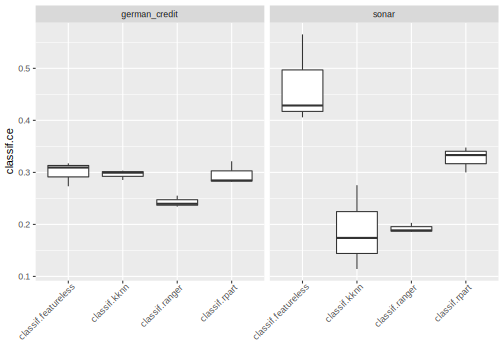
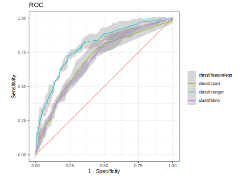

2.6 Benchmarking
Comparing the performance of different learners on multiple tasks and/or different resampling schemes is a recurrent task.
This operation is usually referred to as “benchmarking” in the field of machine-learning.
The mlr3 package offers the benchmark() function for convenience.
2.6.1 Design Creation
In mlr3 we require you to supply a “design” of your benchmark experiment.
By “design” we essentially mean the matrix of settings you want to execute.
A “design” consists of Task, Learner and Resampling.
Here, we call benchmark() to perform a single holdout split on a single task and two learners.
We use the benchmark_grid() function to create an exhaustive design and properly instantiate the resampling:
library(data.table)
design = benchmark_grid(
tasks = tsk("iris"),
learners = list(lrn("classif.rpart"), lrn("classif.featureless")),
resamplings = rsmp("holdout")
)
print(design)
## task learner resampling
## 1: <TaskClassif> <LearnerClassifRpart> <ResamplingHoldout>
## 2: <TaskClassif> <LearnerClassifFeatureless> <ResamplingHoldout>
bmr = benchmark(design)Note that the holdout splits have been automatically instantiated for each row of the design.
As a result, the rpart learner used a different training set than the featureless learner.
However, for comparison of learners you usually want the learners to see the same splits into train and test sets.
To overcome this issue, the resampling strategy needs to be manually instantiated before creating the design.
The interface of benchmark() allows for full flexibility.
Irrespective, the creation of such design tables can be tedious.
Therefore, mlr3 provides a convenience function to quickly generate design tables and instantiate resampling strategies in an exhaustive grid fashion: benchmark_grid().
# get some example tasks
tasks = lapply(c("german_credit", "sonar"), tsk)
# get some learners and for all learners ...
# * predict probabilities
# * predict also on the training set
library(mlr3learners)
learners = c("classif.featureless", "classif.rpart", "classif.ranger", "classif.kknn")
learners = lapply(learners, lrn,
predict_type = "prob", predict_sets = c("train", "test"))
# compare via 3-fold cross validation
resamplings = rsmp("cv", folds = 3)
# create a BenchmarkDesign object
design = benchmark_grid(tasks, learners, resamplings)
print(design)
## task learner resampling
## 1: <TaskClassif> <LearnerClassifFeatureless> <ResamplingCV>
## 2: <TaskClassif> <LearnerClassifRpart> <ResamplingCV>
## 3: <TaskClassif> <LearnerClassifRanger> <ResamplingCV>
## 4: <TaskClassif> <LearnerClassifKKNN> <ResamplingCV>
## 5: <TaskClassif> <LearnerClassifFeatureless> <ResamplingCV>
## 6: <TaskClassif> <LearnerClassifRpart> <ResamplingCV>
## 7: <TaskClassif> <LearnerClassifRanger> <ResamplingCV>
## 8: <TaskClassif> <LearnerClassifKKNN> <ResamplingCV>2.6.2 Execution and Aggregation of Results
After the benchmark design is ready, we can directly call benchmark():
Note that we did not instantiate the resampling instance.
benchmark_grid() took care of it for us:
Each resampling strategy is instantiated for each task during the construction of the exhaustive grid.
After the benchmark, one can calculate and aggregate the performance with .$aggregate():
# measures:
# * area under the curve (auc) on training
# * area under the curve (auc) on test
measures = list(
msr("classif.auc", id = "auc_train", predict_sets = "train"),
msr("classif.auc", id = "auc_test")
)
bmr$aggregate(measures)
## nr resample_result task_id learner_id resampling_id iters
## 1: 1 <ResampleResult> german_credit classif.featureless cv 3
## 2: 2 <ResampleResult> german_credit classif.rpart cv 3
## 3: 3 <ResampleResult> german_credit classif.ranger cv 3
## 4: 4 <ResampleResult> german_credit classif.kknn cv 3
## 5: 5 <ResampleResult> sonar classif.featureless cv 3
## 6: 6 <ResampleResult> sonar classif.rpart cv 3
## 7: 7 <ResampleResult> sonar classif.ranger cv 3
## 8: 8 <ResampleResult> sonar classif.kknn cv 3
## auc_train auc_test
## 1: 0.5000 0.5000
## 2: 0.8028 0.6961
## 3: 0.9986 0.7956
## 4: 0.9892 0.6968
## 5: 0.5000 0.5000
## 6: 0.9196 0.7531
## 7: 1.0000 0.9093
## 8: 0.9985 0.9011Subsequently, we can aggregate the results further. For example, we might be interested which learner performed best over all tasks simultaneously. Simply aggregating the performances with the mean is usually not statistically sound. Instead, we calculate the rank statistic for each learner grouped by task. Then the calculated ranks grouped by learner are aggregated. Since the AUC needs to be maximized, we multiply with \(-1\) so that the best learner gets a rank of 1.
tab = bmr$aggregate(measures)
ranks = tab[, .(learner_id, rank_train = rank(-auc_train), rank_test = rank(-auc_test)), by = task_id]
print(ranks)
## task_id learner_id rank_train rank_test
## 1: german_credit classif.featureless 4 4
## 2: german_credit classif.rpart 3 3
## 3: german_credit classif.ranger 1 1
## 4: german_credit classif.kknn 2 2
## 5: sonar classif.featureless 4 4
## 6: sonar classif.rpart 3 3
## 7: sonar classif.ranger 1 1
## 8: sonar classif.kknn 2 2
ranks[, .(mrank_train = mean(rank_train), mrank_test = mean(rank_test)), by = learner_id][order(mrank_test)]
## learner_id mrank_train mrank_test
## 1: classif.ranger 1 1
## 2: classif.kknn 2 2
## 3: classif.rpart 3 3
## 4: classif.featureless 4 4Unsurprisingly, the featureless learner is outperformed.
2.6.3 Plotting Benchmark Results
Analogously to plotting tasks, predictions or resample results, mlr3viz also provides a autoplot() method for benchmark results.
library(mlr3viz)
library(ggplot2)
autoplot(bmr) + theme(axis.text.x = element_text(angle = 45, hjust = 1))
We can also plot ROC curves.
To do so, we first need to filter the BenchmarkResult to only contain a single Task:

All available types are listed on the manual page of autoplot.BenchmarkResult().
2.6.4 Extracting ResampleResults
A BenchmarkResult object is essentially a collection of multiple ResampleResult objects.
As these are stored in a column of the aggregated data.table(), we can easily extract them:
tab = bmr$aggregate(measures)
rr = tab[task_id == "sonar" & learner_id == "classif.ranger"]$resample_result[[1]]
print(rr)
## <ResampleResult> of 3 iterations
## * Task: sonar
## * Learner: classif.ranger
## * Warnings: 0 in 0 iterations
## * Errors: 0 in 0 iterationsWe can now investigate this resampling and even single resampling iterations using one of the approach shown in the previous section:
measure = msr("classif.auc")
rr$aggregate(measure)
## classif.auc
## 0.9093
# get the iteration with worst AUC
perf = rr$score(measure)
i = which.min(perf$classif.auc)
# get the corresponding learner and train set
print(rr$learners[[i]])
## <LearnerClassifRanger:classif.ranger>
## * Model: -
## * Parameters: list()
## * Packages: ranger
## * Predict Type: prob
## * Feature types: logical, integer, numeric, character, factor, ordered
## * Properties: importance, multiclass, oob_error, twoclass, weights
head(rr$resampling$train_set(i))
## [1] 1 2 3 13 17 262.6.5 Converting and Merging ResampleResults
It is also possible to cast a single ResampleResult to a BenchmarkResult using the converter as_benchmark_result().
task = tsk("iris")
resampling = rsmp("holdout")$instantiate(task)
rr1 = resample(task, lrn("classif.rpart"), resampling)
rr2 = resample(task, lrn("classif.featureless"), resampling)
# Cast both ResampleResults to BenchmarkResults
bmr1 = as_benchmark_result(rr1)
bmr2 = as_benchmark_result(rr2)
# Merge 2nd BMR into the first BMR
bmr1$combine(bmr2)
bmr1
## <BenchmarkResult> of 2 rows with 2 resampling runs
## nr task_id learner_id resampling_id iters warnings errors
## 1 iris classif.rpart holdout 1 0 0
## 2 iris classif.featureless holdout 1 0 0